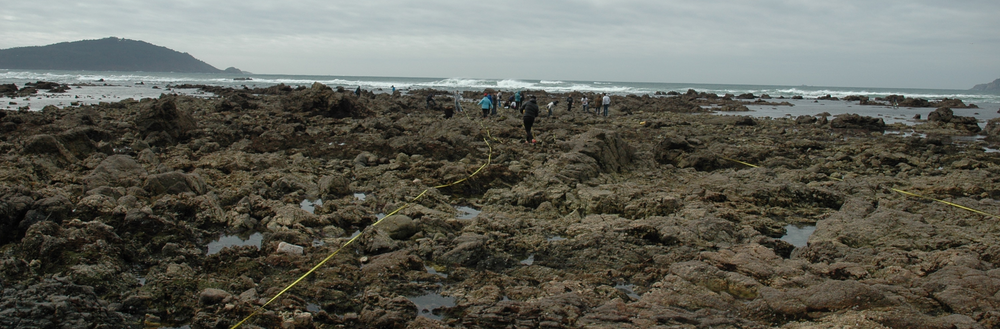

Teaching
- Oceanografía Biológica II (Grado en Ciencias del Mar, UVIGO)
- Oceanografía de Ecosistemas (Master en Oceanografía, Facultad de Ciencias-Vigo, UVIGO)
Mentoring
PhD thesis
- 7. Biological nitrogen fixation in the Rias Baixas (NO Iberia): activity, responsible organisms and control factors. (on going). Daniel Fernández. Coadviser: Marta Varela (IEO-CSIC).
- 6. The role of turbulence in the phytoplankton growth in the Ría de Vigo (NW of the Iberian Peninsula) (2024). Antonio Comesaña Davila. Coadviser: Bieito Fernández (University of Southampton).
- 5. Thin layers of phytoplankton in the Rías Baixas (NW off Iberia): occurrence, formation and relevance (2024). Esperanza Broullón Mandado. Coadviser: Bieito Fernández (University of Southampton).
- 4. Control of the structure of marine picoplankton communities by turbulence and nutrient supply dynamics (2020). José Luis Otero Ferrer. Coadviser: Pedro Cermeño (CSIC-Barcelona).
- 3. Role of turbulence and mixing in the control of the phytoplankton community structure (2020). Marina Villamaña Rodríguez. Coadviser: Emilio Marañón (UVIGO).
- 2. Biological N2 fixation in the upwelling region off NW Iberian Peninsula: magnitude, relevance and players (2018). Víctor Moreira Coello. Coadviser: Emilio Marañón (UVIGO).
- 1. Regional variability in nutrient supply and the synthesis and remineralization of organic matter in the oligotrophic ocean (2015). Bieito Fernández Castro. Coadviser: Emilio Marañón (UVIGO).
Master thesis (TFM)
- 10. Diferencias en la distribución vertical de clorofila entre las Rías de Pontevedra y Vigo (2024). Blanca Marigomez Roldán. Máster en Oceanografía (Universidade de Vigo). Coadviser: Esperanza Broullón Mandado.
- 9. Relación entre condiciones ambientales y presencia de capas finas de fitoplancton en las Rías Baixas (2019). Marta López Mozos. Máster en Oceanografía (Universidade de Vigo). Coadviser: Bieito Fernández Castro.
- 8. Fixación biolóxica de nitróxeno na Ría de Vigo: variabilidad estacional e impacto das entradas antropoxénicas de materia (2019). Diego Ferraz Castiñeira. Máster en Oceanografía (Universidade de Vigo). Coadviser: Emilio Marañón.
- 7. Relación entre capas finas y densidad de fitoplancton tóxico en las Rías de Pontevedra y Vigo (2018). Esperanza Broullón Mandado. Máster en Gestión Integrada de Sistemas Hídricos (Universidade de Vigo). Coadviser: Emilio Marañón.
- 6. Factores que controlan la distribución del picoplancton en aguas costeras del NO de la Península Ibérica (2017). Rodrigo López Soriano. Máster en Oceanografía (Universidade de Vigo). Coadviser: Emilio Marañón.
- 5. Detección de capas finas de fitoplancton en la Ría de Pontevedra durante el periodo 2012-2015 (2016). Víctor Pelayo Espinosa. Máster en Oceanografía (Universidade de Vigo). Coadviser: Emilio Marañón.
- 4. Role of internal waves on mixing, nutrient supply and phytoplankton composition during spring and neap tides in the Ria de Vigo (NW Iberian Peninsula) (2015). Marina Villamaña Rodríguez. Máster en Oceanografía (Universidade de Vigo). Coadviser: Emilio Marañón.
- 3. El control de la turbulencia sobre la composición y estructura de tamaños de la comunidad de picoplancton (2012). Elena Hojas Sánchez. Máster en Oceanografía (UVIGO). Coadviser: Emilio Marañón.
- 2. Variabilidade espacial na síntese e remineralización de materia orgánica no xiro subtropical do Atlántico Norte (2011). Bieito Fernández Castro. Máster en Oceanografía (UVIGO). Coadviser: Emilio Marañón.
- 1. Basins-scale variability of vertical flux of nitrate derived from measurements of turbulence kinetic energy in the Atlantic ocean (2008). Rocío Fernández Graña. Máster Interuniversitario en Oceanografía (Universidade de Vigo). Coadviser: Emilio Marañón.
Undergraduate projects (TFG)
- 13. Diferencias en la distribución vertical de clorofila-a entre las Rías de Pontevedra y Vigo (2023). Yaiza González Freitas. Grado en CC del Mar-UVIGO. Coadviser: Esperanza Broullón Mandado.
- 12. Magnitud y composición de la comunidad fitoplanctónica en el gradiente costa-océano del suroeste de la Península Ibérica en Septiembre de 2022 (2023). Sofía Nieto Romero. Grado en CC del Mar-UVIGO. Coadviser: Emilio Marañón.
- 11. Características del máximo de fluorescencia en las Rías de Pontevedra y Vigo en verano del 2018 (2019). Sandra Villar Herbello. Grado en CC del Mar-UVIGO. Coadviser: Miguel Gil Coto.
- 10. Mecanismos de formación de una capa fina de fitoplancton en la Ría de Pontevedra en verano de 2018 (2019). Enrique Crespo Fernández. Grado en CC Ambientales-UVIGO. Coadviser: Emilio Marañón.
- 9. Fijación biológica de nitrógeno en la Ría de Vigo: variabilidad estacional e impacto de las entradas antropogénicas de materia (2018). Diego Ferraz Castiñeiras. Grado en CC Ambientales-UVIGO. Coadviser: Emilio Marañón.
- 8. Relación entre condiciones ambientales y presencia de capas finas de fitoplancton en las Rías Baixas (2018). Marta López Rozados. Grado en CC del Mar-UVIGO. Coadviser: Miguel Gil Coto.
- 7. Relación entre capas finas y fitoplancton tóxico en la Ría de Pontevedra (2017). Esperanza Broullón Mandado. Grado en CC del Mar-UVIGO.
- 6. Estimación del transporte difusivo de nitrato hacia la capa fótica en regiones oceánicas contrastadas (2016). Mariña Blázquez Maseda. Grado en CC del Mar-UVIGO. Coadviser: Bieito Fernández Castro.
- 5. La influencia de los sustratos artificiales en las comunidades bentónicas de sustrato duro de la Ría de Vigo (2016). Sandra Verde Palmero. Grado en CC Ambientales-UVIGO. Coadviser: Emilio Marañón.
- 4. Factores que controlan la distribución del picoplancton en aguas costeras del NO de la Península Ibérica (2016). Rodrigo López Soriano. Grado en CC do Mar-UVIGO. Coadviser: Emilio Marañón.
- 3. Relación entre a diversidade do bacterioplancton e a entrada de nutrintes na columna de auga, nas augas superficiais da costa da Coruña (2016). Tania Montes Morado. Grado en Biología-Universidade da Coruña. Coadviser: Emilio Marañón.
- 2. El papel de las ondas internas en la mezcla, el suministro de nutrientes y la composición del fitoplancton durante mareas vivas y mareas muertas en la Ría de Vigo (2014). Marina Villamaña Rodríguez. Grado en CC do Mar-UVIGO. Coadviser: Emilio Marañón.
- 1. El control del suministro de nutrientes en la estructura de las comunidades tropicales y subtropicales de picoplancton autótrofo marino (2013). Tomás Leandro Anido. Grado en CC do Mar-UVIGO. Coadviser: Emilio Marañón.
Undergraduate mentoring
- Maribel García Ibáñez. (2010/2011)
- Blanca Ausín González. (2009/2010)
Last updated September 2025